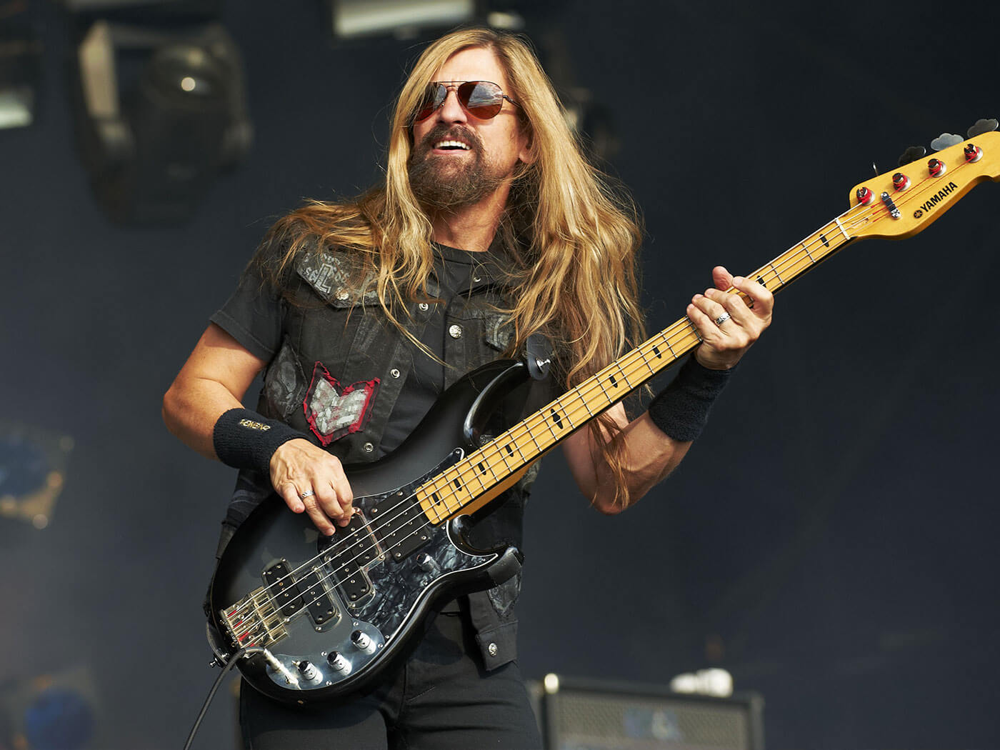

Megadeth
Banda de Thrash Metal
Formado en Los Ángeles, California. Fue creada en 1983 por Dave Mustaine (vocalista, guitarrista y compositor principal), después de que fuera expulsado de Metallica, donde ocupaba el puesto de guitarrista principal. Es comúnmente mencionada como una de los cuatro grandes del thrash metal, junto a Metallica, Slayer y Anthrax.
Canal de youtube
Integrantes actuales de la Banda
| Integrante | Informacion |
|---|---|
 |
Dave MustaineVocalista y guitarristaEs un músico estadounidense, fundador de Megadeth y exguitarrista de Metallica. Nació en 1961 en California y se inició en la guitarra eléctrica a fines de los 70. Fue expulsado de Metallica por su alcoholismo y drogadicción, y formó Megadeth en 1983 con el bajista David Ellefson. |
Kiko LoureiroGuitarristaEs un guitarrista brasileño, exmiembro de la banda de Power Metal progresivo Angra y actualmente miembro de Megadeth. Comenzó estudiando música y tocando guitarra clásica a los 11 años. Es conocido por su gran habilidad para tocar la guitarra, apareciendo en las columnas de revistas como Cover Guitarra, Guitar & Bass, y Young Guitar. Además de sus logros en la música rock y el metal, Loureiro también ha tocado la guitarra en varias canciones del eurobeat en colaboración con Dave Rodgers. |
|
Dirk VerbeurenBateristaEs un baterista nacido en Wilrijk, Bélgica en 1975. Es conocido por pertenecer a la banda sueca de death metal melódico Soilwork, a la francesa Scarve y actualmente a la de thrash metal estadounidense Megadeth. Debido a su habilidad para tocar la batería, ha sido muy solicitado para ser baterista de sesión en muchas bandas. |
|
|  |
James LoMenzoBajistaEs un músico estadounidense, conocido por haber sido el bajista de White Lion y de banda de thrash metal, Megadeth, hasta el 8 de febrero de 2010, momento en el cual fue reemplazado por el antiguo bajista de la banda David Ellefson, volviendo nuevamente en 2021 para una gira pendiente luego de la expulsión del último. También ha trabajado con otras bandas como Black Label Society o Zakk Wylde. |